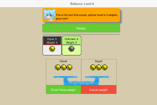

Balance: A Logic Puzzle With Balls, can you find the defective ball?
A Logical game inspired by a famous variation of weighing coin math problems.
In this game you have 12 balls, 11 of them have the same weight and 1 of them has a
different weight, it could be heavier or lighter. You have a two plate's scale and your goal
is to find which ball has a different weight, and if it is heavier or lighter than the
others. You have to find this out with just three weighings to get the best score.
